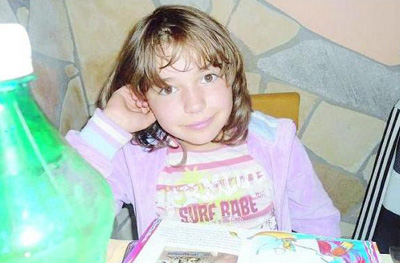

|
- PROCESSI E FATTI CURIOSI CHE RIGUARDANO I FANTINI -
|
|
 L'AUTO SU CUI VIAGGIAVA TRAVOLTA DA UN'AUTO CONDOTTA DA UN VENTENNE UBRIACO E DROGATO
UNA STELLA in più illumina il cielo e ha ridato la vita a cinque bambini. Sono stati infatti donati gli organi della piccola Stella Manzi, coinvolta insieme alla madre Giannina Calissano, alla sorellina e a due fratellastri nel terribile incidente avvenuto la sera di Santo Stefano sulla Nettunense, nel tratto che attraversa il comune di Aprilia. La tragedia si è consumata al rientro da una giornata di festa: una Ka guidata da un ventenne romeno che, come si apprenderà successivamente dai rilievi della polizia stradale di Albano, guidava senza patente, ubriaco e dopo aver fatto uso di cocaina, con un sorpasso azzardato ha invaso la corsia opposta centrando in pieno la Fiat Panda dove si trovavano Stella, i fratelli e la madre che guidava. Oltre al cagnolino di casa che è morto nell’impatto. Tutti ricoverati nelle strutture ospedaliere più vicine, se la caveranno con qualche frattura e lievi ferite. La più grave, appena arrivati i soccorsi, è apparsa subito Stella, trasportata al Bambin Gesù ed entrata in coma irreversibile già qualche ora dopo l’incidente. Ieri notte, la bimba è morta e i genitori, con grande lucidità e generosità, hanno autorizzato l’espianto degli organi. Stella era figlia di Adolfo Manzi detto Ercolino, fantino che ha corso 21 Palii e ne ha vinti due (agosto 1973 nell’Aquila, con Panezio scosso e agosto 1981 nel Nicchio, su Balente de su Sassu) e che negli ultimi anni, pur lavorando ormai all’ippodromo romano delle Capannelle, non ha mai abbandonato Siena e il Palio. Ogni estate, Ercolino torna e diverse volte lo ha fatto anche con Giannina, con Stella e con gli altri figli per salutare la Piazza, i colleghi, per seguire le prove di notte e le batterie davanti all’Entrone, sempre col sorriso, sempre insieme ai vecchi compagni d’avventura con i quali ha condiviso l’amore, la passione, le fatiche dell’essere fantino sul tufo. Adolfo e Giannina hanno dovuto dire addio alla loro piccola ma anche nella tragedia più grande hanno trovato il motivo per compiere un gesto di grande umanità, quello che farà brillare ancora di più il ricordo della loro Stella. «E’ morta con l’allegria della vita. Destino infame» ha scritto Giannina dal letto di ospedale rispondendo ai tanti messaggi di cordoglio che hanno raggiunto la famiglia. Stella è morta, è volata via, «a tutti coloro che l’hanno conosciuta, lunedi prossimo ci saranno i funerali. Alla Parrocchia di Santa Barbara. A Capannelle». Un dolore senza misura racchiuso in frasi brevi, singhiozzi e lacrime per rispondere a una comunità intera che si è stretta intorno alla famiglia Manzi. Poi restano tante foto, una bimba piena di allegria che vedeva il mondo tinto di rosa, come i suoi vestiti, le sue bambole, la sua cameretta fotografata con orgoglio come fosse la casa di barbie. Un piccolo angelo che amava i libri, i cavalli e tutti gli animali. Tante le dirigenze delle Contrade che si sono strette al dolore di Adolfo Manzi e della famiglia |